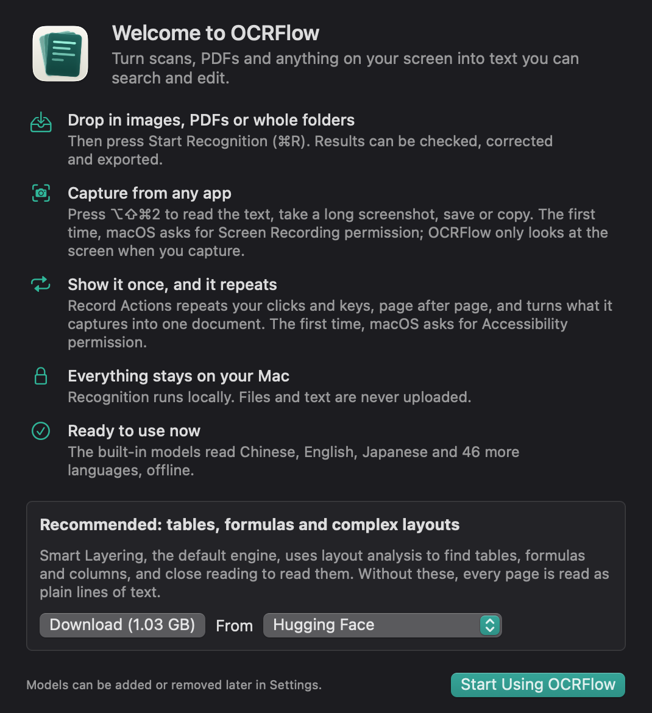

Get the text out of anything on your screen.
Read scans and PDFs in batches, capture from any app, or show OCRFlow once how to turn a page and let it build the whole document.
Download for MacFree and open source · macOS 15 or later · Apple silicon and Intel · Signed and notarized

Read whole folders
Drop in images, PDFs or folders. With the optional models, tables, formulas and columns keep their structure. Export Markdown, text, searchable PDF or Excel.
Capture from any app
Press ⌥⇧⌘2, choose an area or window, and read, save or copy it. Long screenshots join as they scroll, by hand or automatically.
Show it once
Capture a slide and press →. OCRFlow repeats your steps until the screen stops changing, then turns the pages into one document.
It stays on your Mac
Recognition runs locally. There are no accounts, analytics or tracking, and your files and text are never uploaded.
Read the privacy statement